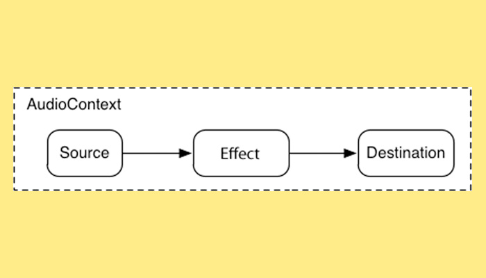

Things you can do in a browser that most people don’t know about
Most of you aren't most people
Browns79
Stuart Brown
@stuartmemo
BBC iWonder & Bitesize
What is the greatest invention of the last 100 years?
Web Audio API

Making Waves
Good Vibrations
navigator.vibrate(
[200, 100, 200]
);
getUserMedia();
Hello?
More human than human
Daisy, Daisy
Web MIDI API
Thanks!
@stuartmemo
github.com/stuartmemo